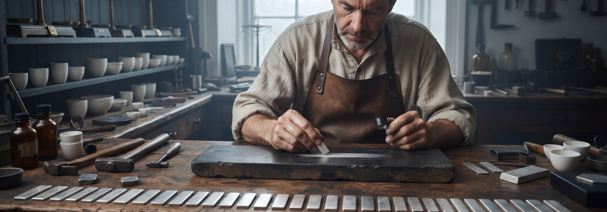

A thing believed on its mark alone: five spelling patterns read off the surface, and the token itself never opened.

codeintel-jwt-misconfiguration-checker searches source text for five JWT misconfiguration patterns. Run it as python3 main.py TARGET, with --verbose for debug logging, --check-secrets enabling the secret search, and --output saving results.
The five patterns are an alg of none (a quoted key allowed, as in a dict), HS256 named as the algorithm in a jwt.encode call, verification disabled in either spelling (verify=False or a verify_signature of False), a missing expiration finding raised per file that mentions jwt yet nowhere says exp or expiration, and, under its flag only, weak secrets.
PyJWT is deliberately never imported: no token is decoded, no signature is tried, and no library configuration is loaded. The GitHub description claim that the tool validates JWT library configurations overstates a spelling search, and the README says so in its margin.
Weak secrets are reported by variable name, length, and predictable list match only; the value itself is never printed anywhere. A helper elsewhere checking expiration does not acquit a silent file.
A directory walk reads only .py, .js, .java, and .go files, while a single file handed over directly is read whatever its ending. The output file is written only when there is something to put in it, so after a clean run no file appears and its absence means clean rather than lost. Findings or unreadable files exit 1; a clean run exits 0.
The README clone line names the stale ShadowStrikeHQ organisation, its usage line is a placeholder, its parameter list omits the required positional target and leaves --verbose undescribed, and its closing licence line reads Copyright (c) ShadowStrikeHQ while the LICENSE file is MIT. All stand as printed and are flagged in the README.